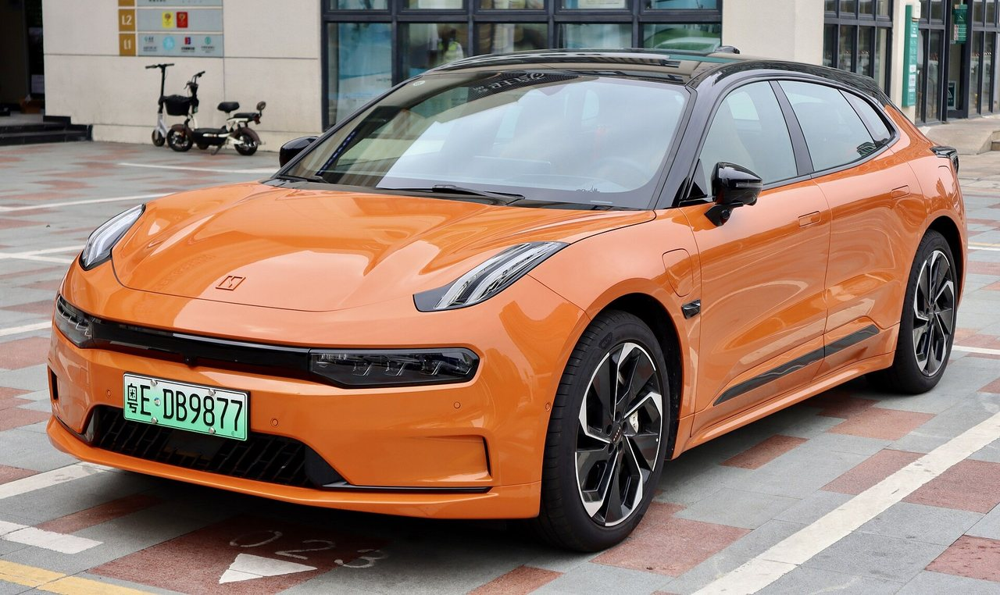

Дзеркала в зборі
З камерами і повторювачами. Ліві/праві окремо, звіряємо комплектацію по VIN.
Запчастини з Китаю під замовлення
Компактний преміум-кросовер для міста — а місто означає парковки, бордюри і дрібні ДТП. Привозимо дзеркала, бампери і механізми прихованих ручок під конкретний VIN.
X — маленьке авто з недешевими рішеннями: приховані ручки дверей, безрамкові вікна, камери замість звичайних дзеркал у частини версій. Саме ці елементи найчастіше страждають у місті. Звіряємо комплектацію по VIN — і привозимо саме той вузол, що у вашому авто.

З камерами і повторювачами. Ліві/праві окремо, звіряємо комплектацію по VIN.
Прихована ручка, що не виїжджає — типове звернення. Привозимо механізм у зборі.
Передні й задні, з парктроніками і кронштейнами — рахуємо комплектом.
Фари і ліхтарі під конкретну комплектацію, з перевіркою маркування.
Гальма, фільтри, двірники — додайте до основного замовлення, доставка вигідніша.
Опишіть симптом своїми словами — менеджер підкаже, яка деталь зазвичай потрібна, і перевірить по VIN.
Механізм або моторчик. Привозимо вузол у зборі — дешевше, ніж міняти двері.
Звіримо по VIN: з камерою чи без — і привеземо в зборі або окремий елемент.
Бампер або накладка окремо. Покажемо оригінал і OEM з різницею в ціні.
Колодки + диски комплектом, привозимо під вашу версію приводу.
Авіа — від $15,5/кг (від 30 кг — від $11,3/кг), море — від $5,6/кг (від 30 кг — від $2,5/кг). Ціна включає доставку і розмитнення, фіксується до оплати. Точну вартість конкретної деталі менеджер підтверджує після перевірки VIN — до 30 хвилин у робочий час.
Модель, VIN і що потрібно — формою, у Telegram або телефоном.
Звіряємо артикул і комплектацію у каталогах дилера в Китаї.
Авіа чи море, строк і фінальна сума «під ключ» — до оплати.
Фотозвіт перед відправкою, трек-номер і статуси до отримання.
Дрібні міські пошкодження — наш найшвидший сценарій: дзеркала, накладки, механізми їдуть авіа від 14 днів. Надішліть фото пошкодження у Telegram — менеджер сам визначить деталь.
Звернення зустрічаються, особливо взимку. Привозимо механізми в зборі — заміна швидка, не потребує фарбування.
Це компактна авіа-позиція: орієнтовно від 14 днів з фотозвітом перед відправкою.
Платформи різні, спільного мало. Кожну позицію звіряємо по VIN конкретного авто.
Можна по фото і назві, але для дзеркал і оптики VIN критичний — комплектацій багато.